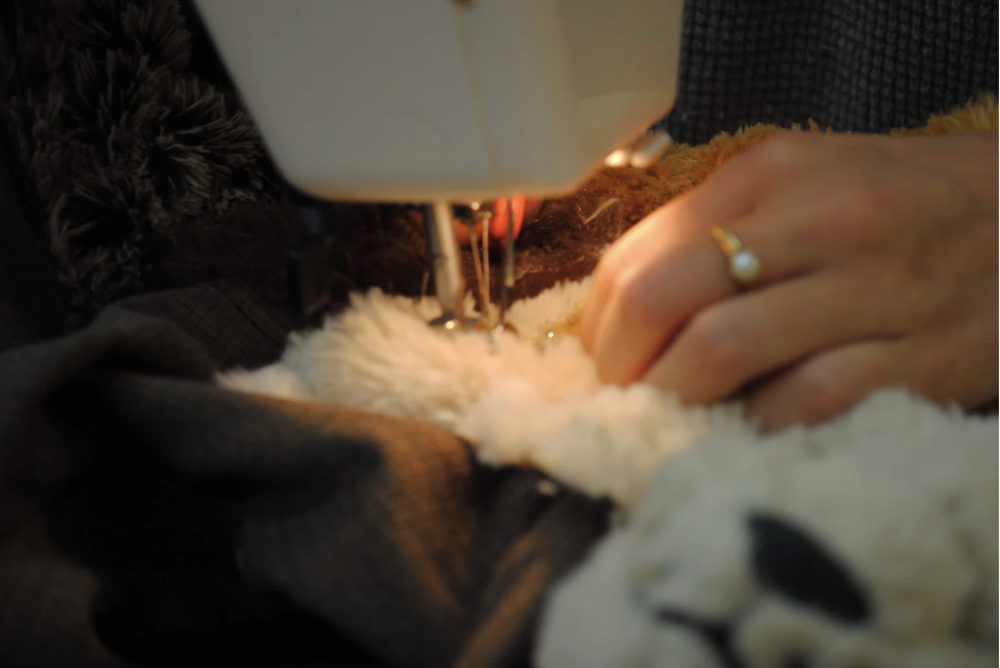
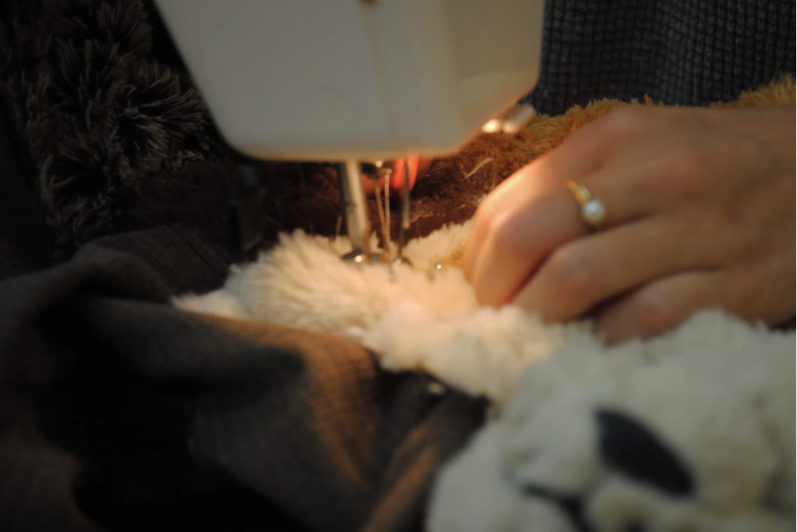

Designed and constructed in 2020, trapped is my first fashion collection. It consists of three outerwear pieces: overalls, corset, and jacket. Throughout the design process, I focused on the contrast between organic and manufactured elements while exploring themes of sustainability and constraint. All materials (fabric, metal hardware, stuffed animals, safety pins, gloves) were purchased second-hand.
trapped was showcased in the 10th annual Fashion @ Brown Runway Show in March 2020.